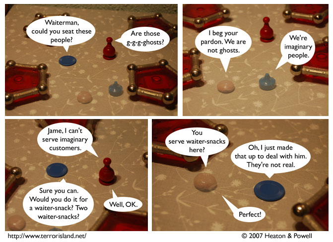

Strip #109
— Wednesday, February 21, 2007
Waiterman should know that there’s no such thing as g-g-g-ghosts.
Notes, Thoughts, &c.
Ben’s Notes
I hope you like the way the imaginary characters look. Their transparency means that each panel needs to use two pictures, which is twice as many as usual.
Lewis’s Notes
Bonus Alternate Title Text: “These aren’t imaginary people, it’s just old man Witherspoon from the abandoned amusement park.”